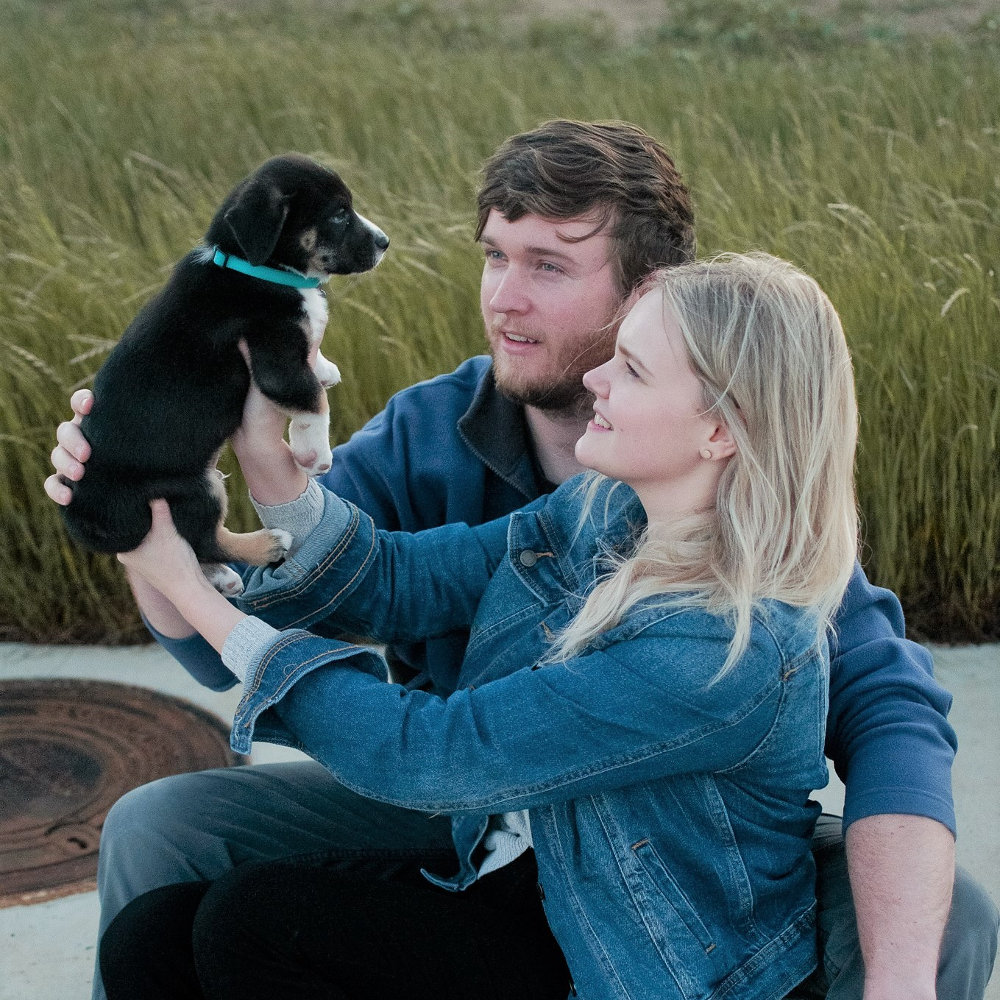

Hi, I'm Peter Gilkey. I live in Leander, TX with my girlfriend Alisha and our dog. I grew up in Kennedale, TX, and lived there for 20 years before moving to the Austin area. Some of my favorite things to do include playing music, fishing, kayaking, and skiing during the winter months in Colorado.
Introduction
